k-Day 110｜洞穴壁畫
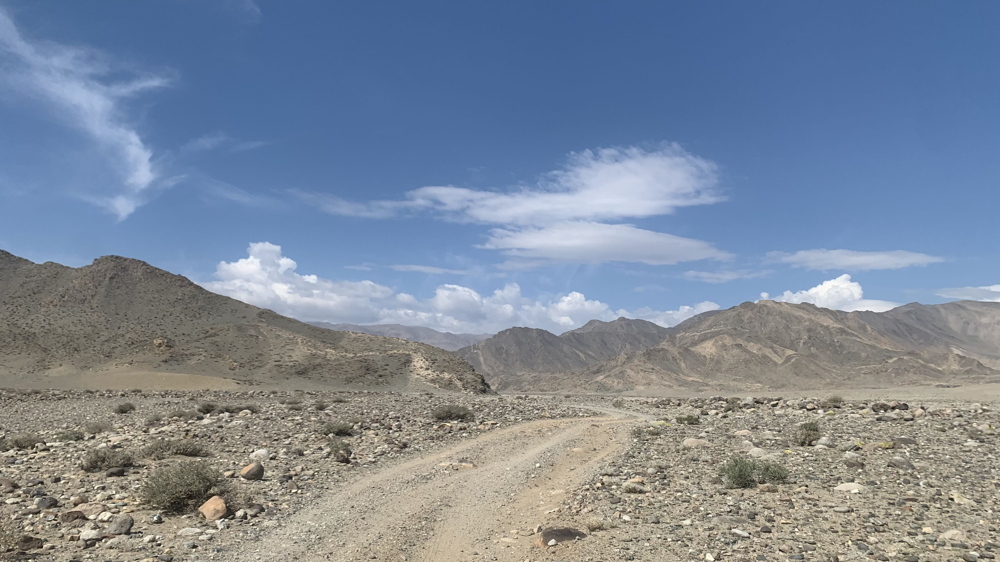
有了昨天的經驗，大致可以推算出抵達營地的時間。
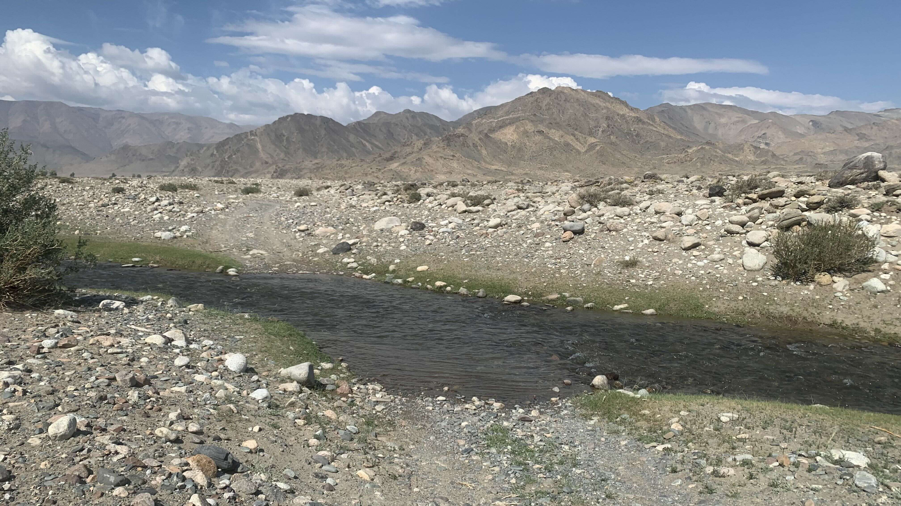
走了一陣，車徹痕跡就斷在河裡。
「不是啊，英文老師，你跟我說可以一直騎到山腳下的啊！」
捲起褲腳脫下鞋，想想是值得紀念的一天，打開運動相機，推著二十三號踩進冰涼的水裡。石頭上的青苔有點滑，歪歪扭扭過了河岸。
過河後脫下濕透的襪子，好開心啊！
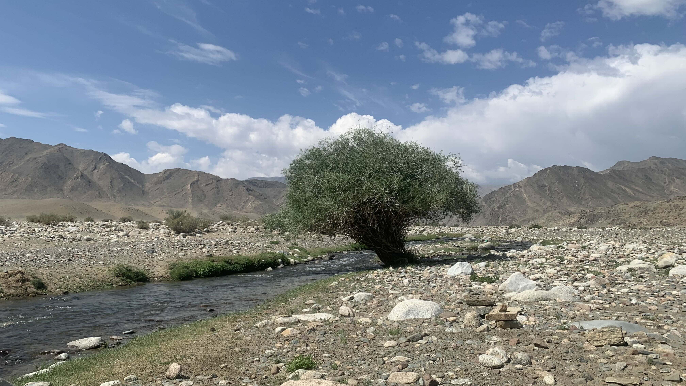
腳乾透了穿上鞋，推了幾公里，又出現一條河，河邊還長了一棵年齡不小的樹。
這次換個鏡位，開開心心脫下鞋，捲起褲子，將二十三號先推過河岸，再回頭拿相機。
坐在石頭上晾乾雙腳，按下按鈕檢視畫面，根本沒開機呢？
冷靜點，先回看記憶卡中的影片，驚慌之下連上一條河的影片都被刪掉了。
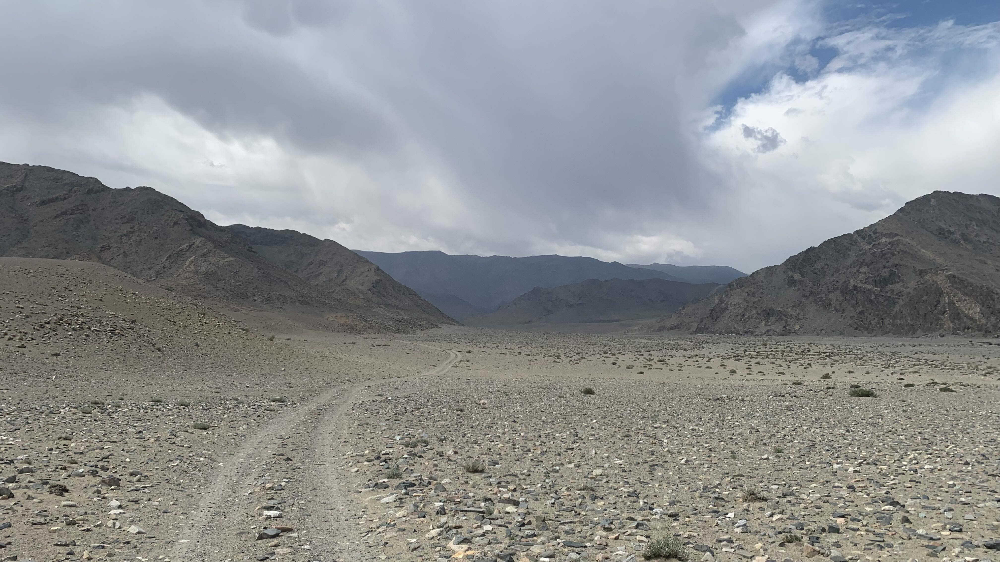
那只好繼續走了。
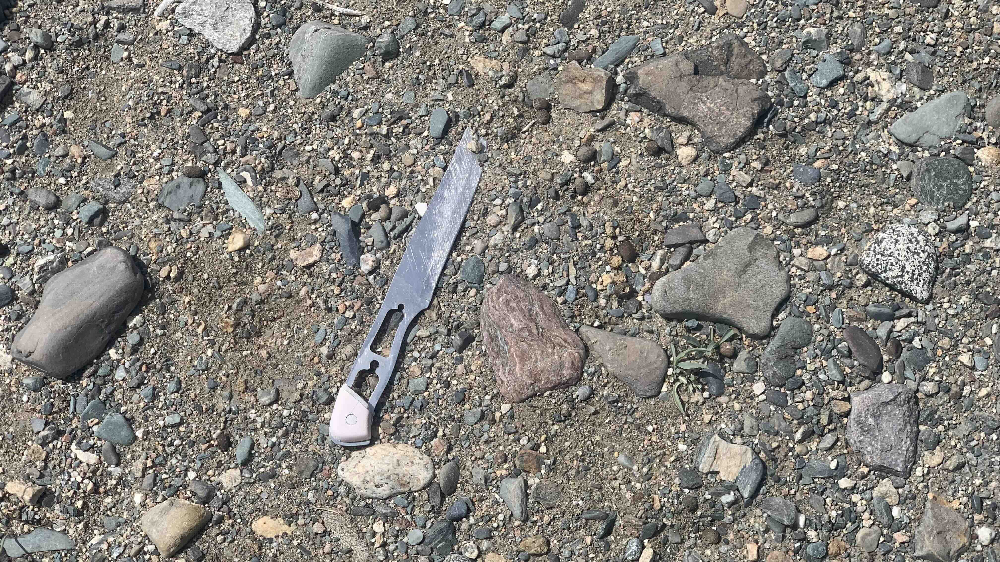
地上出現一把刀，已經進入人類活動的範圍了。
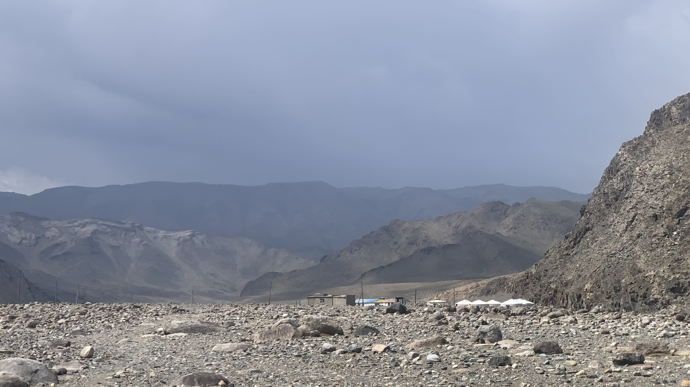
下午一點抵達蒙古包營地。走進營區，看到一隻綁在木樁上的羊。喊了幾聲後有位年輕人探頭出來。
「請問住一個晚上多少錢呢？」
「十萬」年輕人說。
「我沒有那麼多現金，如果收美金的話可以嗎？」詢問的過程瞄到旁邊停著兩輛車，車頂有貨架「如果明天有車能載我回曼罕，我想住一晚，加上車費總共多少錢呢？」
「沒有車，住一晚三十美金，但是這裡沒有現金可以給你。」
「如果沒有車的話今天就必須回去了，我推車回程裡需要兩天。」
此時屋裡走出一對夫婦，年輕人向他們說明狀況。回過頭後問：「你有多少蒙古幣？」
「六萬。」我掏出腰包裡所有的現金給他們看。
「六萬可以。」年輕人說。
「那麼明天有車能載我回去嗎？車費是多少錢？」
「沒有車，一個晚上六萬。你到底需要什麼？」
「沒車的話我今天就必須回去，我走回城裡要兩天。」重複了剛剛的話，感覺對方似乎並不了解我說的，打開手機地圖，比手畫腳做出推車的動作，指了指曼罕的位置，手指比了個二。
這次大家似乎聽懂了，露出不可置信的表情看著我。
「兩天？」一旁的大姐驚訝地問，手指比了二。
「兩天。」我緩慢地點頭，比出二的手勢。
「我要去曼罕，載你過去就好。」大叔淡淡的指了旁邊停著的轎車，似乎對我說了這樣的話，說完走回房內。
「他剛剛是說可以載我嗎？」我問年輕人。
「不，這裡沒有車。一個晚上六萬。你要住嗎？」
在蒙古待了一個半月，其實早已聽得懂大叔的話。然而此刻這位翻譯的年輕人在中間交涉，也無法繞過他。只好放棄溝通，說：「那麼我今天就回去。」說完往地上一坐。原本坐在門口觀看的夫婦看到我一屁股坐在地上，開心地笑了起來。
用憋腳的蒙語單詞跟大家說明我的路線，大叔繞著二十三號看看車輪和前叉，懷疑這東西真的能走石頭路嗎。看見他掏出口袋的煙，我立刻從包裡拿出一包高檔卡斯特五。大叔看到果然很興奮，遞了一根給他後，他用英語回答：「Thank you!」
年輕人站在一旁，看著圍繞二十三號坐在地上的我們。沒多久用谷歌翻譯問道：「你要去看洞穴壁畫？我可以導覽，一次兩萬元。」
看了訊息後立馬點頭答應，背上包包，將二十三號靠在營地餐廳旁，跟著他往山的方向走。
年輕人用中文說：「我會說中文，我住在科布多。」這大概是他能組織的唯一一句中文。
「為什麼會說中文呢？」好奇地問他。
「我明年想去上海讀書。」
原來是個高中畢業生，暑假時來這裡當導遊。
走進山洞前，他拿出自己的手機，要我拍下一個說明牌，自己用翻譯軟體看內容。
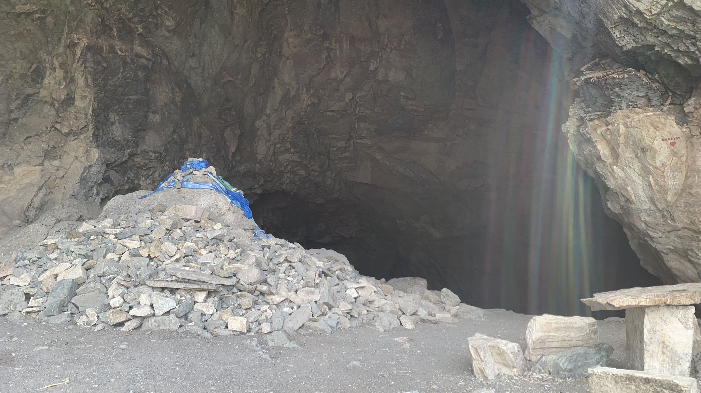
洞穴幾乎在半山腰，沿著碎石陡坡往上爬，洞口有個敖包，還有原始的石頭疊起的石桌石椅。
「這個山谷總共有三個洞穴，這個是最多壁畫的。旁邊還有一個小的，沒有壁畫。另一個在山谷遠方的另一座山裡。」年輕人一邊說，一邊拉上頭巾，進入山洞前轉頭和我說：「你有面罩嗎？」我也學他將頭巾拉起，罩住口鼻。
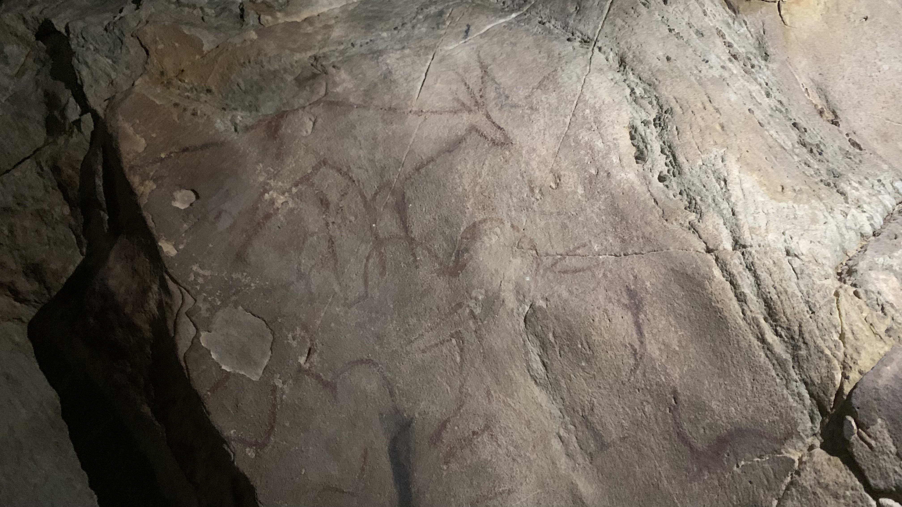
洞穴的左邊有四個凹陷的小洞，牆上用紅色與黑色畫出山羊、駱駝等動物。
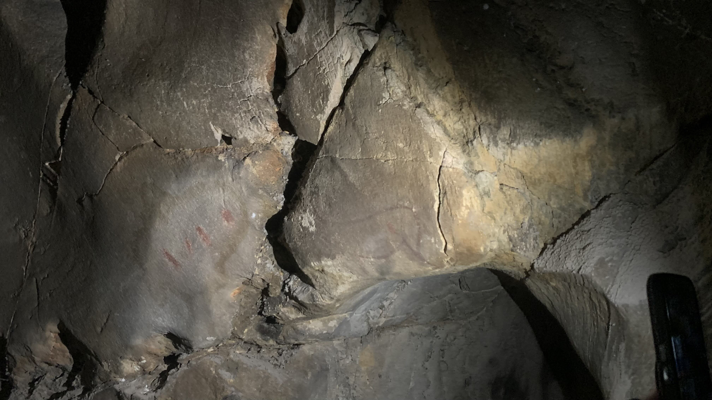
這隻應該是豬。
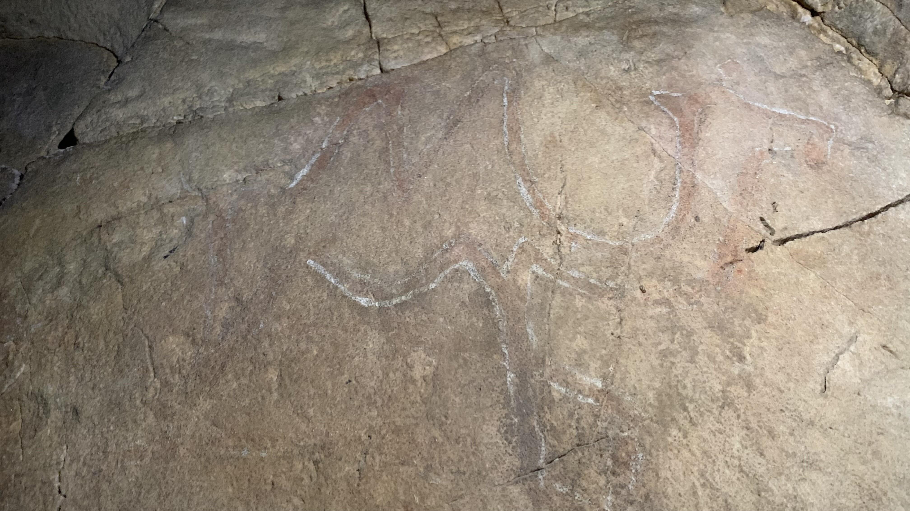
這是駱駝。
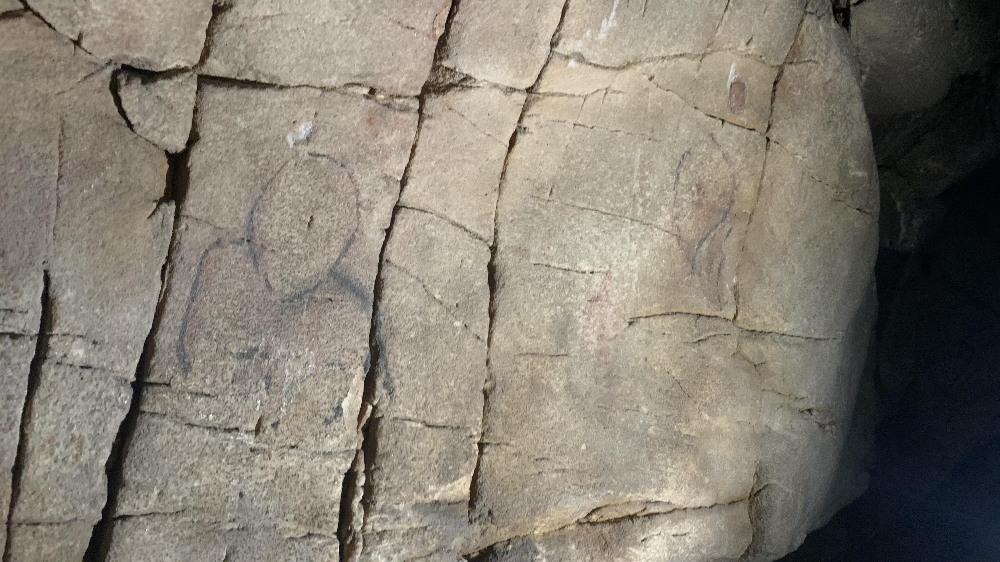
這是人。跟其他動物比起來顯得有點草率。
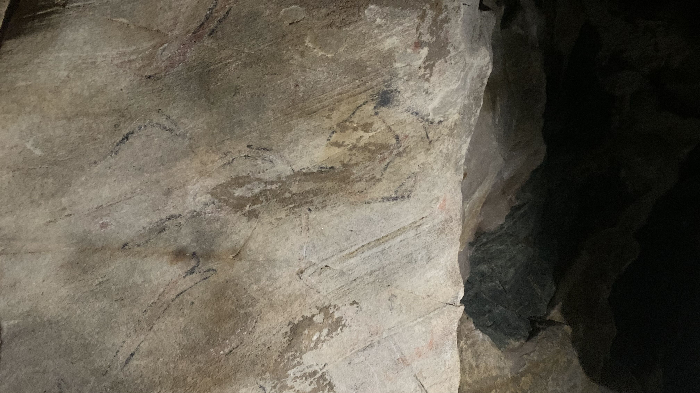
前面的動物都畫在洞穴裡的凹陷處，只有這個動物畫在突出的牆緣。
「白天太陽的角度會照射到這個位置。」年輕人說。
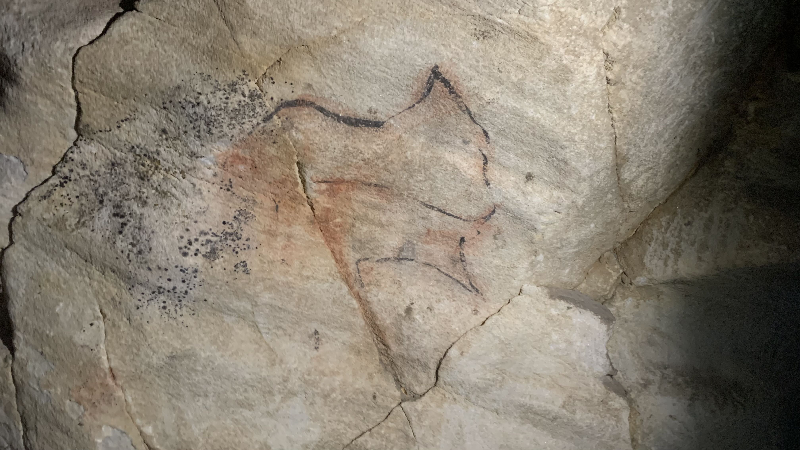
至於這個，忘記是什麼動物。
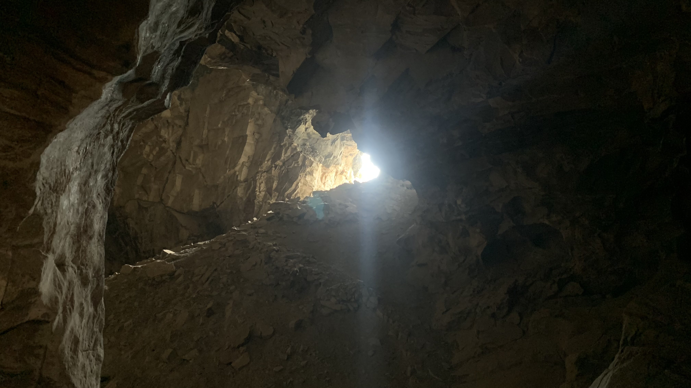
滑到石堆下方，再爬到洞穴右邊。
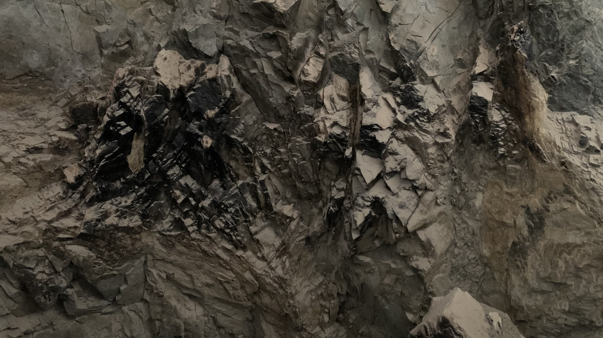
「這一邊的牆都是黑的，沒有壁畫。那邊是用來畫畫的，這邊是用來煮飯的。」
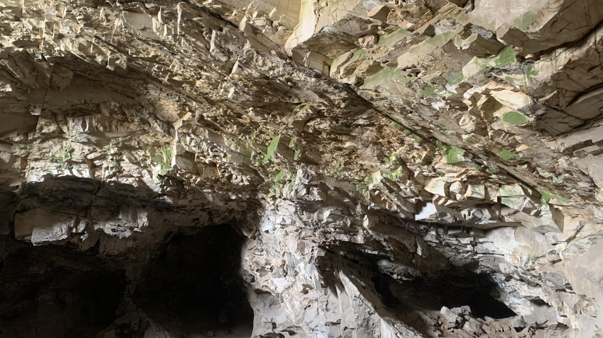
接著年輕人指向畫了壁畫的方向，指著牆面的綠色石塊，說：「這些綠色是因為陽光照進來，所以長了綠色的青苔。」
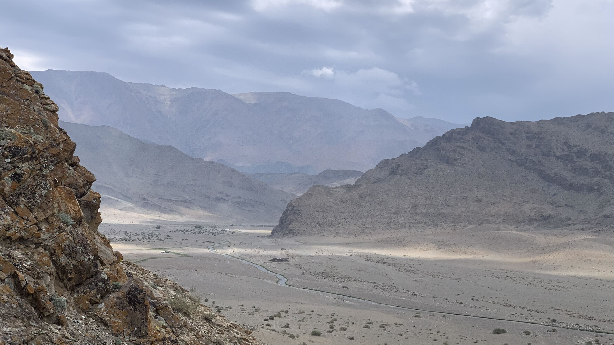
回到洞口，俯瞰整個河谷，當時的人類究竟為了什麼爬到這麼高的山洞來？
回程時年輕人主動提起返回曼罕市區的事：「你要車子回去，我可以幫你問問他們願不願意載你。」
「那真是太謝謝你了。」雖然遠遠地已經看到大叔把車子開到門口等候，卻還是覺得這名年輕人相當有趣。
將二十三號放到車上，一直在餐廳繞著轉的小朋友突然用英文問我：「你要吃飯嗎？你要喝茶嗎？你要喝汽水嗎？我們有汽水和薯片，你要薯片嗎？」
「我買個汽水吧。」
聽到這句話，小孩立刻進門拿出鑰匙，和年輕人一起領著我走進旁邊的建築。櫃檯後方有汽水、薯片和一些糖果。
「我要一瓶橘子汽水。」
小孩站在櫃檯後方，一罐接一罐地把汽水搬到檯子上。
「一罐就好了。多少錢呢？」
年輕人要小孩把簿子拿出來，看了一眼說：「3000元。」
我將零錢掏出來交給櫃檯後方的小孩，他沒有收下，朝年輕人看了一眼。
回程時大叔開著車朝另一個方向走，雖然同樣是土路，卻沒有沙地，也不用翻山，徑直開向城鎮的入口。
「以後這種行程不該問英文老師，好歹得問問地理老師才行。」我心裡這麼想著。
約莫開了半小時，車外下起大雨。如果大叔沒有答應載我，我今天應該是全身濕透的縮在河床上的某處。
全程時速維持在4-29公里，途中經過正在牧羊的兩名女子，大叔讓他們拿了車上的熱奶茶和外套。驕傲地說：「這是我的孩子。」
「孩子。」我重複。大叔看我聽懂了，指著天空說：「下雨。」
「對，下雨。」我回答。
接著陷入長長的沈默。大叔點起一根菸，抽完後隨手將煙屁股丟到窗外。
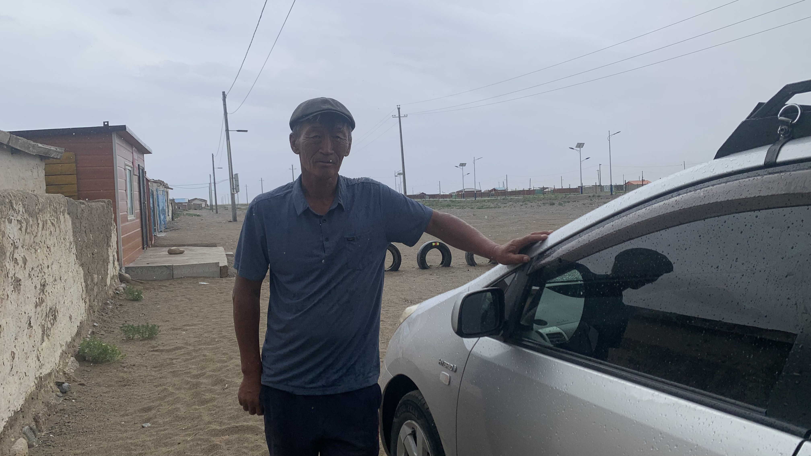
在我暈到即將吐出來的時候，終於抵達曼罕。大叔將二十三號搬下車，我將整包菸遞給他。他看了一眼，抽出一根後將剩下的煙還給我。我拿了他手上的煙，又將煙盒交給他。深深鞠了九十度的躬。
大叔說：「下雨很冷。」我點點頭。
「再見。」說完後他提著一桶羊奶走進朋友家。
冒著雨回到鎮上的草原，在樹下搭起帳篷。全身都濕透了，縮進帳篷裡，將剛買的橘子汽水喝光。
今天的年輕人想去上海留學，昨天的小朋友說他要去紐約。究竟是某個地方吸引我們，還是我們早已按照自己的性格選擇了自己的目的地？
今日花費： 導覽費 20000、汽水 3000元